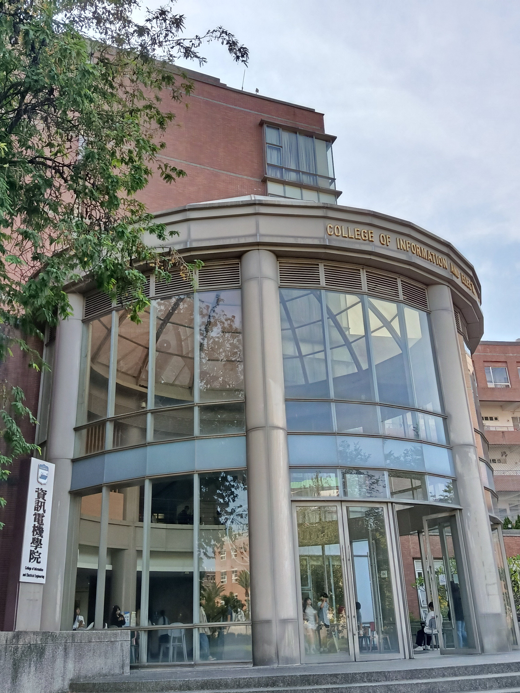

網站系統建置與規劃
自我介紹
113022066 AI系3A 陳姿云
透過系上安排的學程，我認識到許多高中時期不曾接觸過的新知識，也學習到不同領域的專業技能。雖然在學習的過程中感到新鮮有趣，但對我來說，程式相關的課程仍然具有一定的難度。無論是理解程式碼的邏輯，還是實際動手寫程式，都需要花費更多時間練習與思考，有時即使課堂上聽懂了，實際操作時仍然會遇到非常多的問題。不過，我也了解到學習程式不能只靠死記硬背，而是需要透過不斷練習、尋找錯誤，才能解決問題。未來我希望自己能保持耐心，遇到不懂的地方時主動尋找資料或向他人請教，並慢慢累積經驗。
照片
圖書館
偶爾有空會到圖書館看書

I棟
這裡是我周一到周五都會來的地方，因為大多數的課程皆集中在這棟教學樓上課。